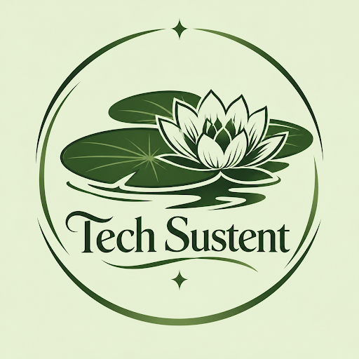

Ideia do projeto: criar uma horta inteligente na escola utilizando sensores de umidade do solo e um sistema de irrigação automática.
Como funcionaria? Os sensores seriam colocados na terra para verificar a quantidade de umidade. Quando o solo estivesse seco, o sistema poderia acionar a irrigação automaticamente. Dessa forma, as plantas receberiam água na quantidade necessária, evitando desperdícios.
Benefícios: Economiza água por meio da irrigação controlada. Incentiva a alimentação saudável com o cultivo de verduras e legumes. Ensina os alunos a utilizar a tecnologia para cuidar do meio ambiente. Reduz o trabalho de regar as plantas manualmente. Estimula o trabalho em equipe e a educação ambiental.
Fechar torneiras corretamente e utilizar sensores para evitar desperdícios.
Separar papel, plástico, vidro e metal para facilitar a reciclagem.
Utilizar documentos digitais, trabalhos online e formulários eletrônicos sempre que possível.
Utilizar bicicletas, caminhar, usar transporte público ou compartilhar caronas para diminuir a poluição.